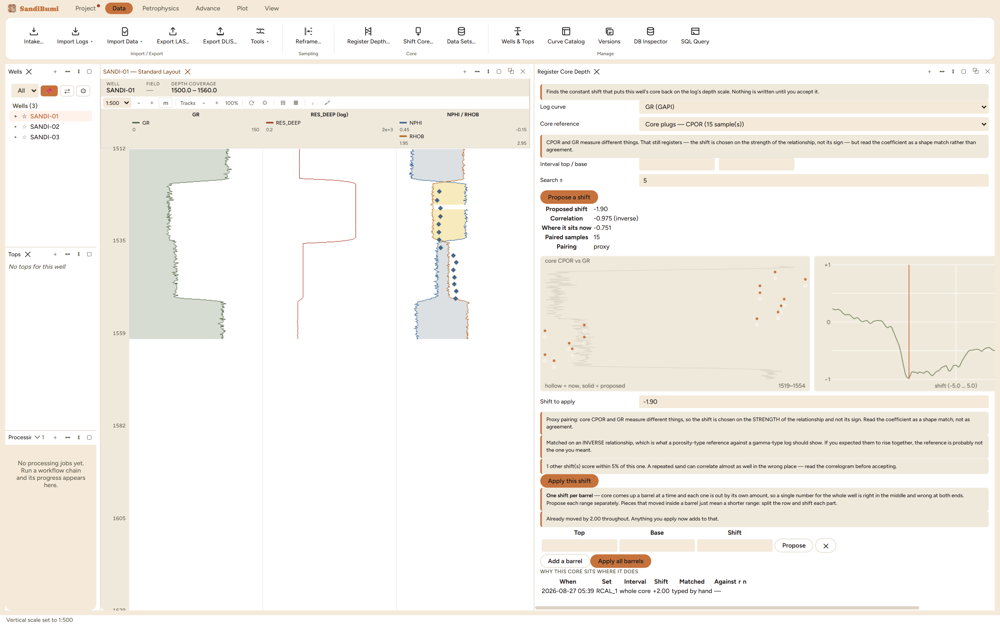

Register Core Depth proposes the constant shift that puts a well's core
back on the log's depth scale. Core comes to surface a barrel at a time and
is depth-marked by a tally, so the laboratory's depths and the wireline's
routinely disagree by a metre or two; every plug property, thin section and
capillary-pressure curve then sits against the wrong rock. Reach for it
before any tool that pairs a plug with a log sample: Plug QC, the SandiMin
core check, the facies core tie, a saturation-height fit.
The pane

A deliberate +2.00 m error typed into Shift Core, then
recovered: the proposal reads −1.90 m at correlation
−0.975 on 15 plugs, the correlogram troughs at the answer, and
the core points in the log view sit visibly deep against the sand.
Log curve and core reference pick the pair to correlate. A
delivered core gamma against wireline GR is like-for-like and must
agree in sign; a core porosity against GR is a proxy, and the pane says
so before you run:
CPOR and GR measure different things. That still registers — the shift is chosen on the
strength of the relationship, not its sign — but read the coefficient as a shape match
rather than agreement.
The whole correlogram is drawn, on a fixed −1..+1 axis,
not just its peak: one sharp trough means the shift is determined, a
comb of near-equal candidates means the section repeats and the
maximum is a coin toss. The example counts its rivals out loud: "1
other shift(s) score within 5% of this one."
Nothing is applied automatically. The proposal fills an
editable "Shift to apply" field; here the −1.90 proposal was
edited to the known −2.00 before accepting, and the recorded
correlation is the one at the shift actually applied
(−0.96), not the scan's peak.
One shift per barrel is the finer tool below: each range
proposes against its own correlogram, because a single number for a
whole well is right in the middle and wrong at both ends.
Step by step
Open Data ▸ Core ▸ Register Depth… with the
well selected; pick the log curve and the strongest core reference the
delivery carries (core gamma if delivered, else porosity).
Press Propose a shift and read four things in order: the
proposed shift, the coefficient and its sign, how many plugs paired,
and the rival-peak note against the correlogram.
Accept, edit, or ignore the proposal, then Apply this
shift. Tick which deliveries ride along; a delivery imported on
log depths must stay where it is.
Reading the result
The example was staged: the core was first moved +2.00 m through Shift
Core, then registered back. On 15 plugs whose only sharp feature is the
porosity step at the sand base, the proxy scan against GR found
−1.90 m of the −2.00 (correlation −0.975 against
−0.751 where it sat), and flagged one rival within 5% because a
near-featureless profile correlates almost as well half a sample away.
The sign came out inverse, which is what a porosity against a gamma ray
should show; the pane treats a proxy that rises with GR as the warning,
not the win. After applying, "Why this core sits where it does" holds both
events: the manual +2.00 "typed by hand" and the −2.00 "proxy
(inverse), core CPOR vs GR, r −0.96, n 15". An undo appends a
reversal to that history rather than erasing it, so a core that was moved
and put back never masquerades as one nobody touched.
QC and pitfalls
The laboratory's depths are never lost. The delivered depth
is kept per plug, unshifted, whatever registrations follow; a late
delivery written on the core report's depths can be mapped through
that record at import ("These depths came from the core report").
Read the correlogram, not just the number. A high coefficient
with rivals named is a proposal to inspect, not accept; the depth of
the trough matters less than how alone it is.
Ride-alongs are a choice, not a guess. The dialog lists every
live delivery with its declared depth basis; moving a perforation
record delivered on the driller's scale along with the core is the
silent error the checkboxes exist to prevent.